为了坚持从头开始创造数学的精神，我们只基于自己已经发现的知识（虽然同时会提及其他知识），只使用我们自己的缩写和术语（偶尔加入一些传统术语），并且自己画图。但是在这样的基础上，我们能够画出我们无意之间构想出来的这些新怪兽吗？目前我们还不知道如何计算
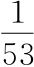
或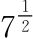
的具体数值，那我们该如何画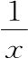
或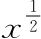
的图形呢？其实，虽然我们用图形描绘这个新世界的能力有限，但这个缺陷并不能阻止我们理解这些新机器的特征。让我们花一点时间，利用已有的知识，来研究一下这些机器的形状是什么样的。我们不画过于复杂的机器，比如M（x）≡x-1/7+92x21/5-（x-3/2+x3/2）333/222，
只关注那些简单而且具有代表性的新机器。在前面的插曲中，我们发明了3种新的幂：零、负数和分数。其中零次幂就是1，因此我们实际上只要处理两种：负数幂和分数幂。最简单的具有代表性的负数幂也许是
最简单的具有代表性的分数幂则似乎是
我们先看第一个。我们没有耐心计算甚至不会计算7-1或（9.87654321）-1的具体数值，但是没关系。我们想知道的是机器M（x）≡x-1总体上的特征，我们可以从直观上认识它的形状和特性。我们对这台机器的认识基本上可以概括为以下4条数学语句，它们其实是同一条语句的不同表达。[1]
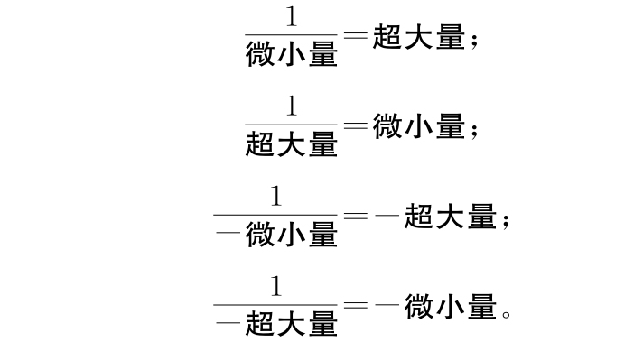
例如，
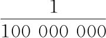
很小，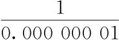
很大，通过让x变得越来越小，我们可以让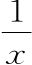
要多大就有多大。不用进行乏味的计算就能明白这一点。因为在我们的世界里没有除法，从最开始，我们就说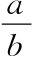
只不过是（a）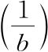
的缩写，而可笑的符号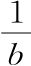
只不过是与b相乘得1的数的缩写。由于这个符号是用它有什么样的性质而不是它是什么来定义，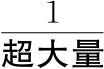
自然就应当是一个很小的数：表示与超大量相乘得1的数，而如果某个数在与一个很大的数相乘才能放大成1，那原来的数肯定很小。不用计算，只需推理就能知道。虽然这个思想很简单，但仅仅依靠它我们就能画出图3.1。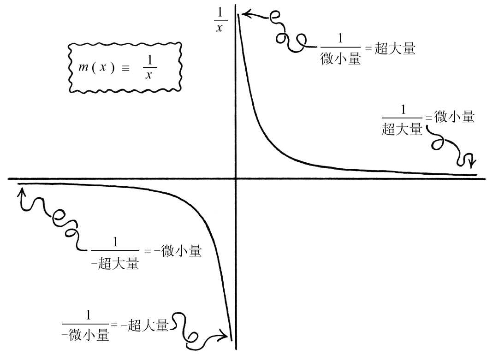
图3.1 我们知道（i）1除以很小的数会得到很大的数，（ii）1除以很大的数会得到很小的数，（iii）在前面两条中，“很小”可以要多小有多小，因为“很大”可以要多大有多大，反过来也是一样。据此我们大致可以了解机器m（x）≡
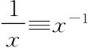
的形状是什么样子，虽然我们完全不会计算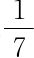
的具体数值，也没有兴趣计算。好了，虽然我们不会计算
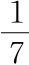
或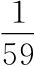
的具体数值，但从总体上理解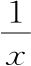
并没有想象的那么难。数学有时候会奇怪地后退，就像这样。那另一种新机器呢？我们能将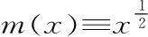
也就是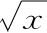
画出来吗？同前面一样，我们也不会计算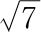
或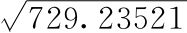
的具体数值。但是，我们知道如何做基本的乘法，因此我们知道如何计算整数的平方。例如，12=1， 22=4， 32=9， 42=16，
诸如此类。现在，利用我们在前面的插曲中发明的分数幂定义，可以将上面的语句用稍微不同的方式表达出来：
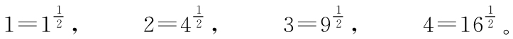
如果是比1小的数呢？举个简单的例子，我们知道，
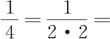
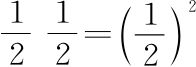
，这其实就是说：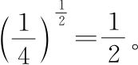
因此取比1大的数的
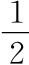
次幂会让其变小，取比1小的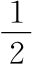
次幂会让其变大。据此，可以大致画出机器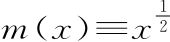
的图形。结果如图3.2所示。同前面一样，我们对机器有了总体上的认识，虽然不知道如何计算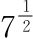
的具体数值。与我们平时的看法相反，在所有数学中，这才是标准范式。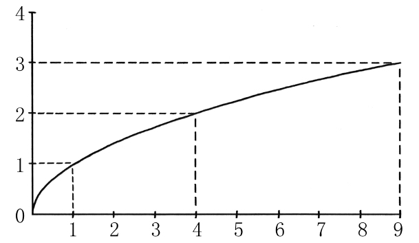
图3.2 用我们仅有的知识画二分之一次幂机器
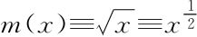
。[1] 在前面我们用微小量表示无穷小的数，但在这里它只表示常规的很小的数，比如0.000（一大堆零）0001。类似的，超大量也只表示常规的很大的数，而不是无穷大的数。